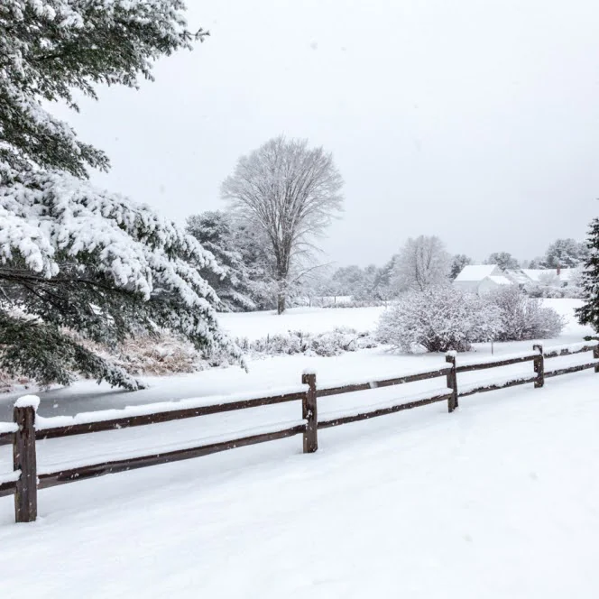

Reconstruction of naturalized river flows
Lin et al. (2019; Water Resources Research) · WRR Editor’s Choice Award
GeoWater Research Lab
From global inland waters to spatially explicit river science—these projects provide the scientific and technical foundations for our current focus on spatially organized river systems, hydrological pulses, and flood–human interactions.


Lin et al. (2018a, JHM; 2018b, EMS; 2018c, JAWRA)


Lin et al. (2016; Geophysical Research Letters)
Media: ScienceDaily

Lin et al. (2020; Environmental Research Letters)
Media: ScienceDaily
Building on these foundations
Explore Current Research →